아빠님 생신추카로 가족과 함께 워커힐 한식레스토랑 온달 댕겨왔습니다 :)
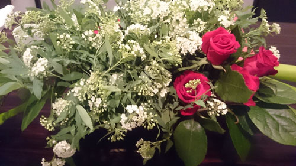
엄마님께서 근성(...)으로 직접 장식해서 가져온 꽃바구니 ㅋㅋㅋㅋ
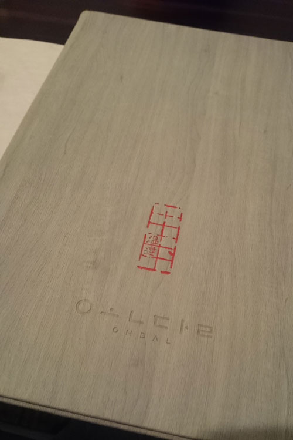
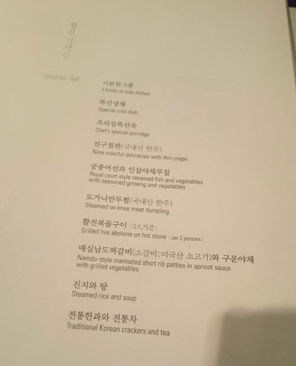
진찬 상차림 세트
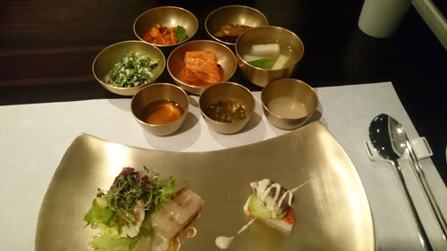
기본반찬과 특선냉채
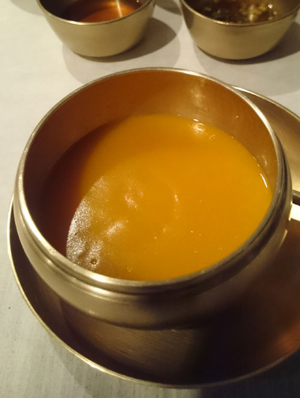
조리장 특선죽
호박죽이었는데 이거 맛있었어용 :D 호박죽 좋아//
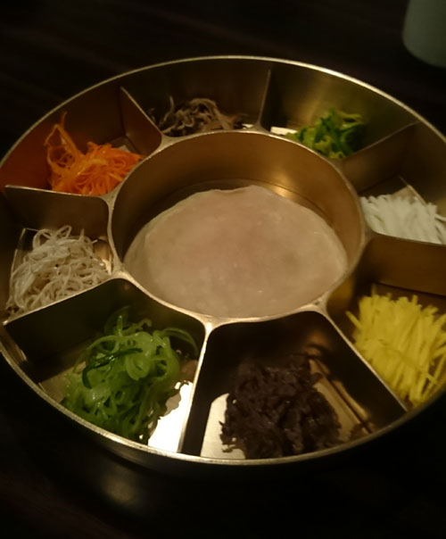
진구절판
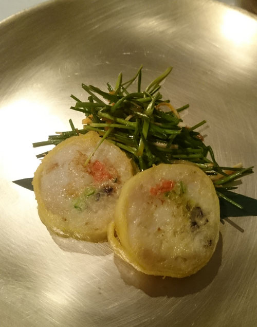
궁중어선과 인산야채무침
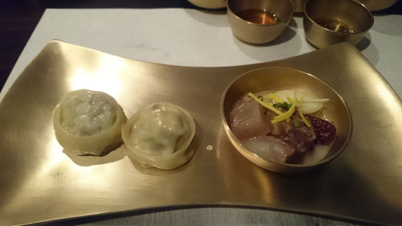
도가니만두찜
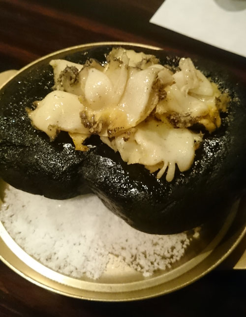
활전복돌구이
얇게 슬라이스해서 버터에 구웠는데
늠 내취향// 맛있었어용
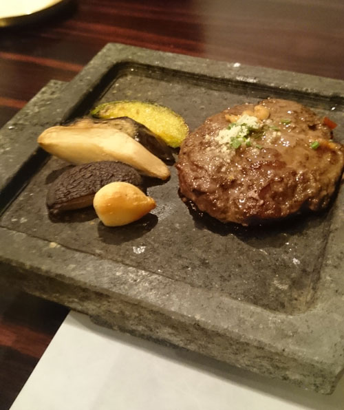
매실남도떡갈비
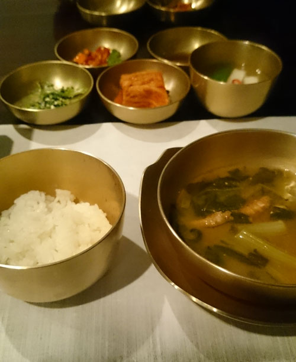
진지와 탕
밥+된장국
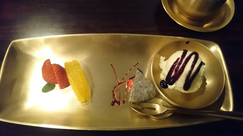
후식까지 @_@
거하게 잘먹고 왔습니다
밤이라 야경도 이쁘고 우선 조용해서 좋네용//
웹사이트: